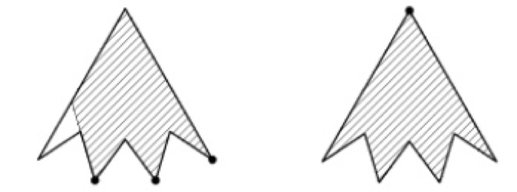

A rabbit, preparing for the arrival of guests, hung lightbulbs in three corners of his polygonal hole. Winnie the Pooh and Piglet came and noticed that lights did not illuminate all the pots of honey which were in the rabbit hole. When they reached for some honey, two of the lightbulbs broke. The rabbit moved the remaining light bulb into some corner so that the whole hole was lit up. Is this possible? $($If yes, draw an example, if not, justify the answer.$)$
Yes, it could be possible $($see the figure$)$.
